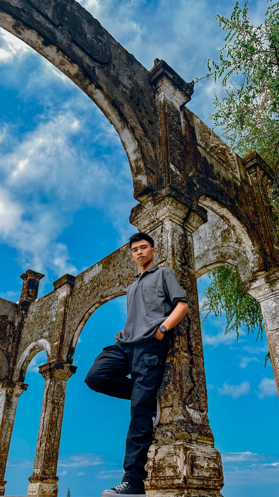
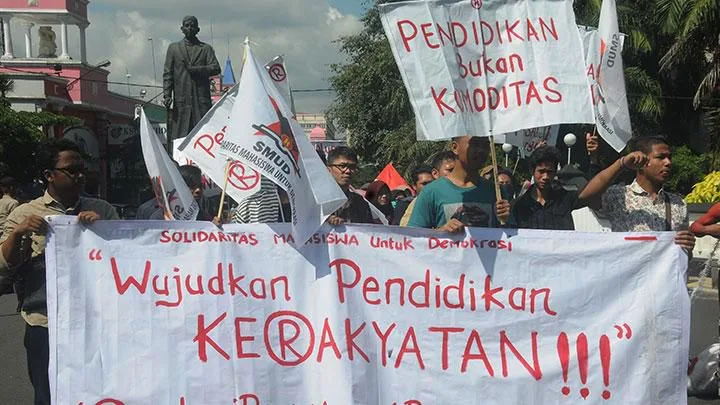
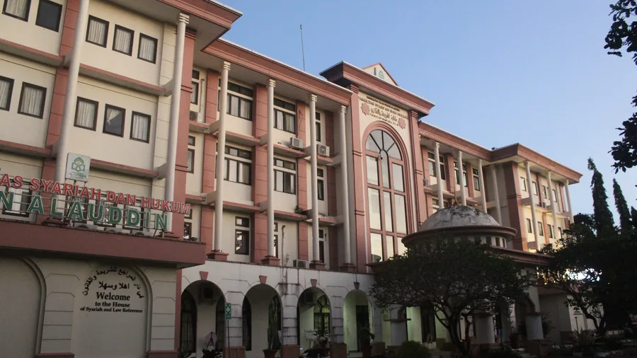
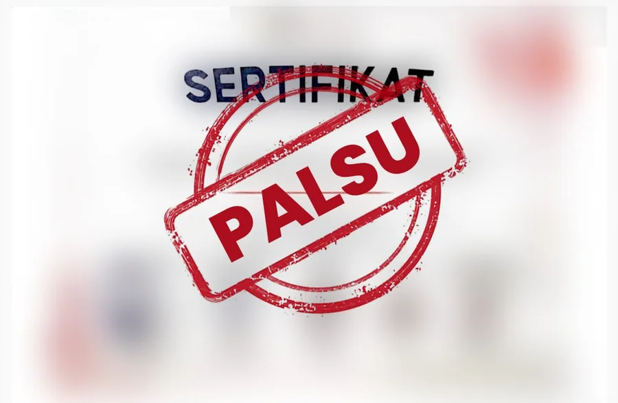
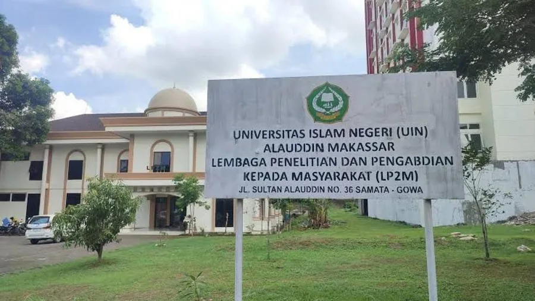
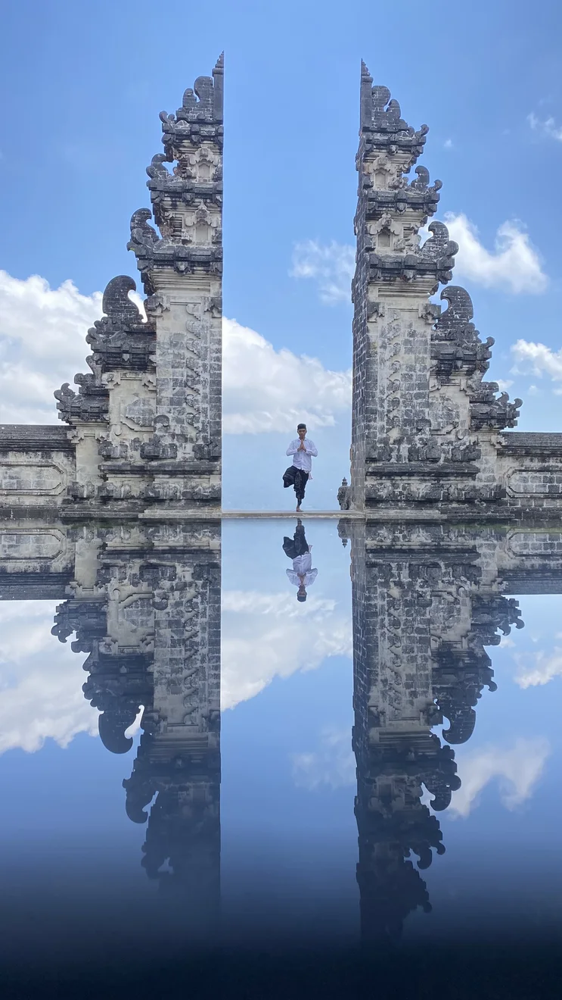
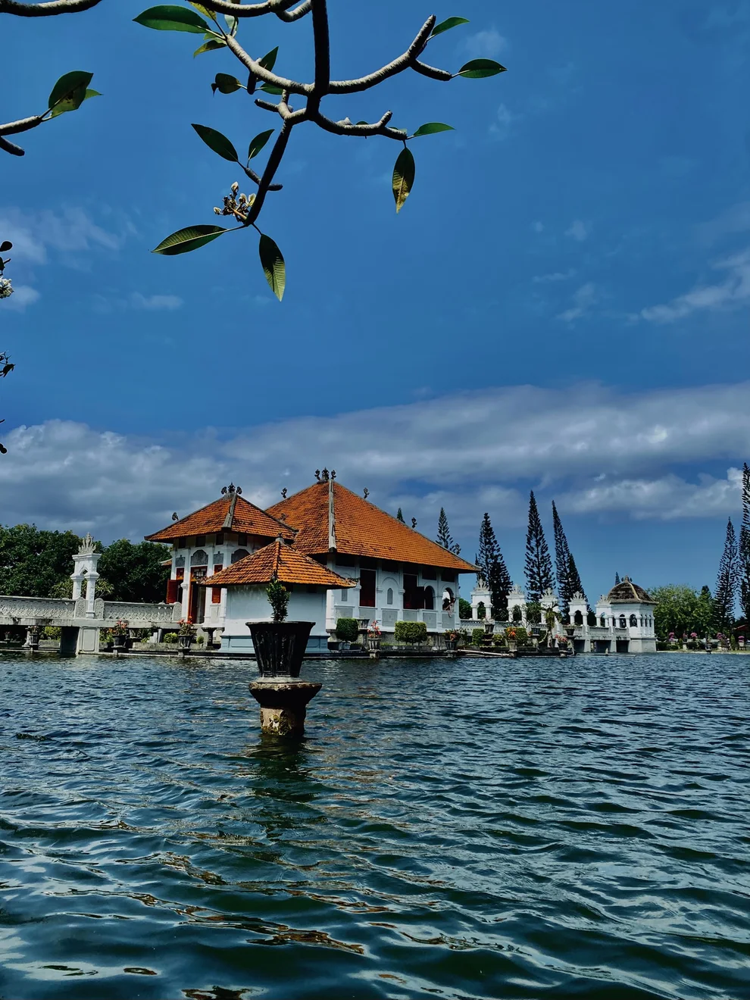
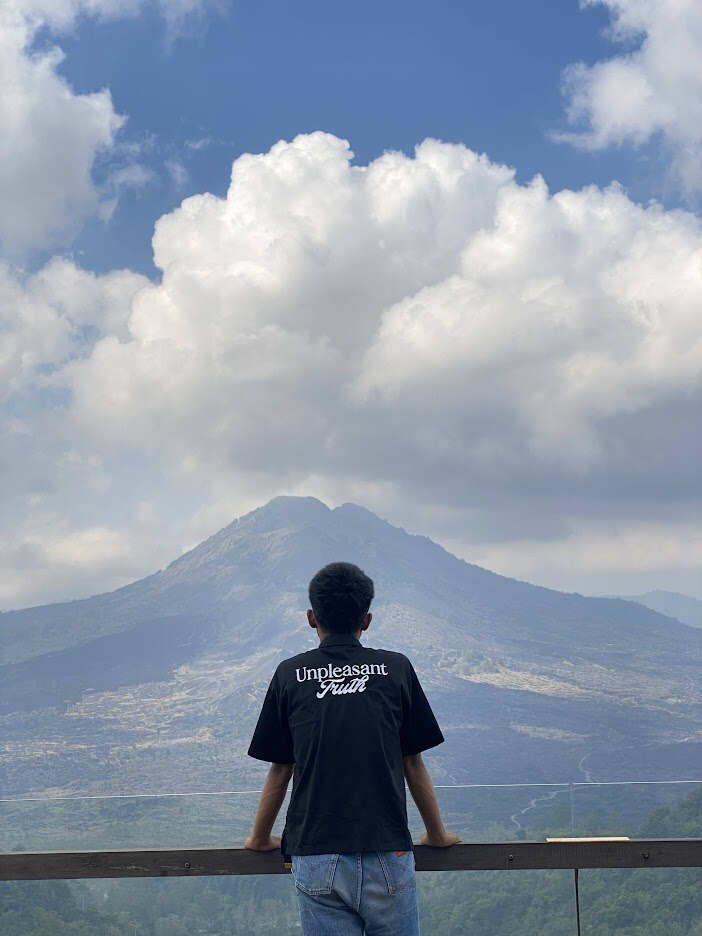
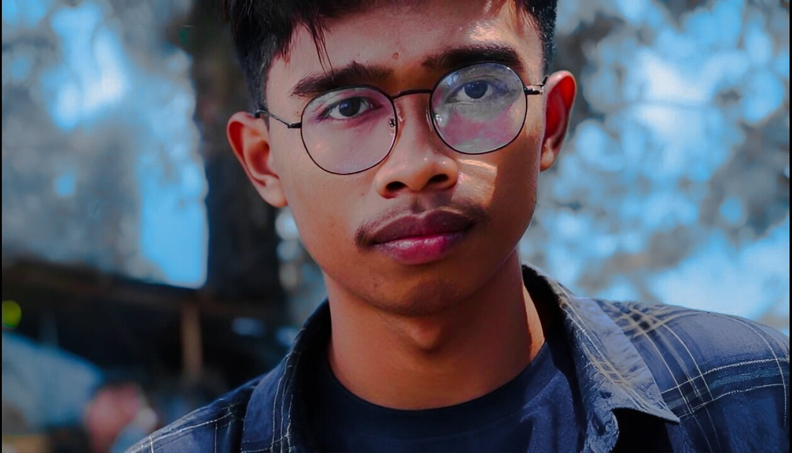

Videografi
Pengambilan gambar dengan kamera, drone, dan gimbal.
Gowa, Sulawesi Selatan
Saya mendokumentasikan cerita lewat kamera, menyuntingnya menjadi video, dan menulis liputan untuk pers mahasiswa Washilah.

Profil
Saya mahasiswa Ilmu Hukum di UIN Alauddin Makassar dengan pengalaman sebagai reporter pers mahasiswa, dalam advokasi, dan dalam produksi konten digital. Peliputan dan wawancara melatih saya mencari sudut cerita serta menyusun informasi dengan jelas.
Saya terbiasa menggunakan kamera, drone, dan gimbal. Saya menyunting di CapCut Desktop dan terus mengasah komposisi, sudut pengambilan, serta gerak kamera.
Pengambilan gambar dengan kamera, drone, dan gimbal.
Menyusun footage dan membangun ritme cerita di CapCut Desktop.
Penggalian ide, peliputan, wawancara, verifikasi informasi, penulisan berita, dan riset hukum.
HMJ Ilmu Hukum. Mengelola kegiatan kajian hukum, advokasi mahasiswa, dan penguatan kesadaran politik serta HAM.
Meliput kegiatan, mewawancarai narasumber, menulis berita, dan terlibat dalam kegiatan redaksi.
Koordinator kegiatan penyuluhan di Kajang pada 2025. Terlibat dalam penyuluhan mengenai perlindungan ekosistem laut di Jeneponto pada 2024.
Anggota UKM RITMA dengan keterlibatan dalam kegiatan riset mahasiswa dan kemitraan masyarakat.
Portofolio video
Pilih sampul untuk memutar video dalam layar penuh.
Pers Mahasiswa UKM LIMA
Pilihan berita kampus, liputan cek fakta, dan opini pendidikan.




Album pribadi






Di sela kegiatan, saya menikmati kopi. Saya paling suka kopi yang diseduh dengan teknik manual brew.
Kontak
Untuk kolaborasi video, liputan, atau sekadar obrolan tentang kopi.